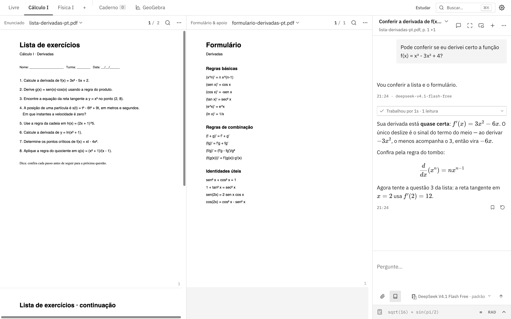
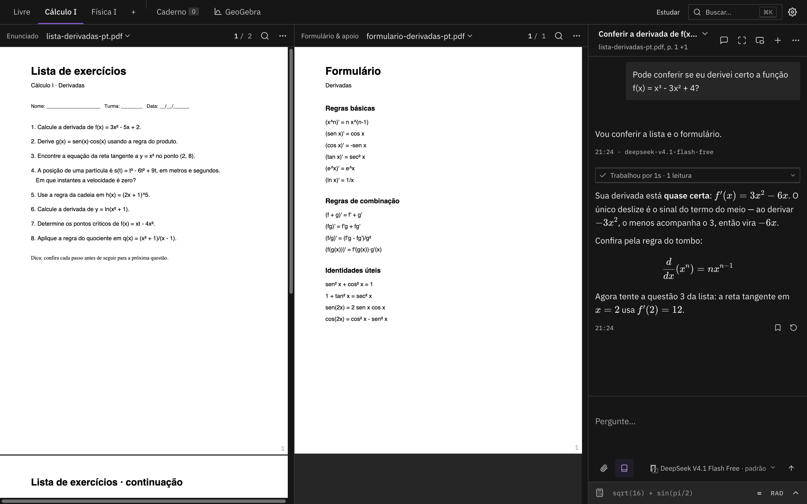

Solvitur ambulando.
Estude com seus PDFs e um tutor que não dá a resposta antes de você.


Solvitur ambulando.
Estude com seus PDFs e um tutor que não dá a resposta antes de você.
O PDF da matéria abre na Summa, ao lado do formulário.
A resolução fica no seu programa de escrita, à mão.
Quase. O primeiro termo está certo. Olhe de novo o termo do meio, −3x², com a regra do tombo. Quanto dá agora?
Busca, sumário e favoritos. O tutor cita “Arquivo.pdf, p. N” e o clique abre a página.
Manda a página escrita ao tutor. Sem computador por perto, um QR code recebe as fotos.
Lista, apostila, resumo, simulado e formulário, com prévia em A4 antes de salvar.
O que você guardou volta no Revisar hoje.
Gráficos e atividades no chat, offline. GeoGebra quando precisar.
A conversa numa janela pequena, sempre por cima do Xournal++.
PDFs, conversas e caderno moram numa pasta sua. Sem conta na nuvem.
A Summa não manda nada sobre você para lugar nenhum.
Começa com os modelos grátis do OpenCode. A conta de outro provedor entra no próprio app.